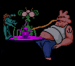

The
Space Quest Chatroom
The Space Quest Universe frequently gathers via Internet Relay Chat (IRC), to
discuss such important issues as Roger's women, Sierra, or if pancakes are better
with syrup or honey. Frequently mistaken for "#SQ", this chatroom has
dangerous side-effects and is known to make you a social outcast in real-life.
To join in the fun and silliness join the room "#sq" on server "irc.freenode.net".
You should download an IRC client, such as mIRC
,
or use the web gateway
on Sq7.Org.